Accessible Components: Search Bar
Overview
Components are reusable elements that we as designers use to create and manage consistent designs. Common examples include buttons, checkboxes, and dropdowns. The component of our interest is the Search Bar. Most interfaces are built from a predefined set of components, and they must be accessible!
So, we must understand how the Search Bar is made accessible through inputs and outputs.
Let's look at some examples
Google Docs
Photos App on Mac
Instagram App on iPhone
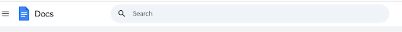
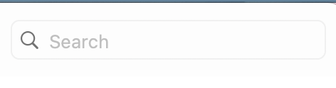
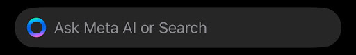
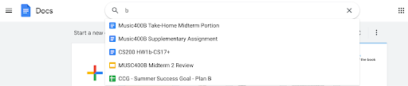
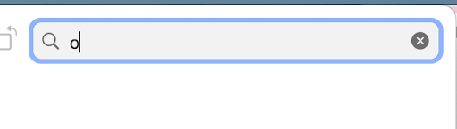
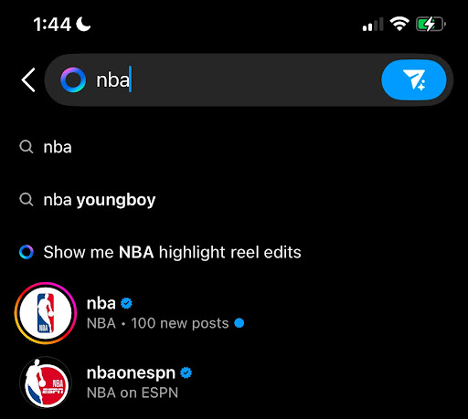
Inputs
What is interacting with some of these components using different inputs like?
Initial thoughts on testing these inputs
What is the process like interacting with the component on the various apps?
- Working in Google Docs and the Photos App on Mac is very similar experience with both the mouse and the keyboard.
- The Instagram App is different because you need to navigate using your fingers.
What are all the functions the component can do (or can’t do)?
- Photos App on Mac has functionality for the 'esc' button, where it deletes your search text at once instead of having to delete character by character. Google Docs doesn't have this.
- Google Docs, the Photos app, and Instagram have search previews, helping to guide your input
- Instagram doesn't have it's own search button. You have to use the 'return' button on the iPhone keyboard.
What functionalities of the component are learnable, memorable, and efficient?
- The querying functionality is learnable and memorable because of the search icon and labels on the text box. This clearly demonstrates to users the purpose of the text box.
- The results preview makes it intuitive for the user to understand that they are finding a file or account or criteria with their input text
- The keybord shortcuts makes using the component efficient
Outputs
Google Docs
- Mouse:Clicking on the search box places a cursor at the beginning, and the label stating, "search" still stays until a character is typed. Clicking on the 'X' icon clears the output so we get an empty text box and the cursor leaves as well.
- Keyboard: Typing triggers live suggestions below the search bar. Pressing the 'return' key makes query and updates
Photos on Mac
- Mouse: Clicking on the search box places a cursor at the beginning, and the label stating, "search" still stays until a character is typed.
Instagram
- Voice search for accounts & hashtags
- Screen reader compatibility
- Keyboard navigation on desktop
How is the Screen Reading and Focus Order?
- One weakness of the screen reader in google docs is the lack of clarity. When I turn on screen reader, and make my way to the search bar, I hear the statement: “Search Bar; Search. You are currently on a menu pop-up combo box, inside of heading level 1. Type text or, to display a list of choices, press Control-Option-Space” in rapid speed.
- But looking at the Photos App on Mac, it is a lot more like I would expect. Going to the search bar, the screen reader says, "Search Field, blank". This is much more understandable
- The focus order is mostly good for Google Docs and for Photos. In google Docs, it starts at the Navigation Bar going left to right, where you can access the search bar component easily. However, you can't 'tab' through documents (maybe for the better since there is endless amounts).
- The Photos App only lets you tab between the search bar and the left-hand side column where you can select the gallery to look through, so it's a straightforward experience
Let's focus on Google Docs' Search Component
This is how the interactions work on the component for the different types of users. Take a look at these state models.
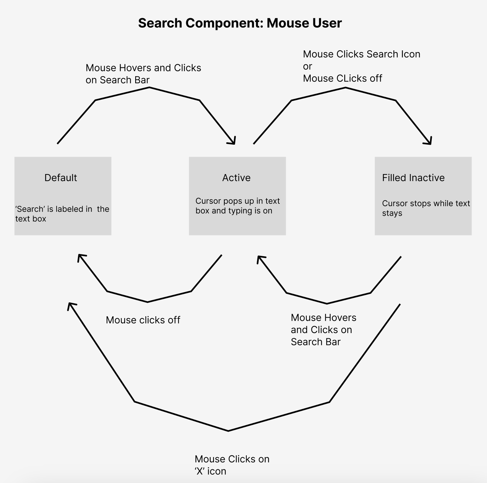
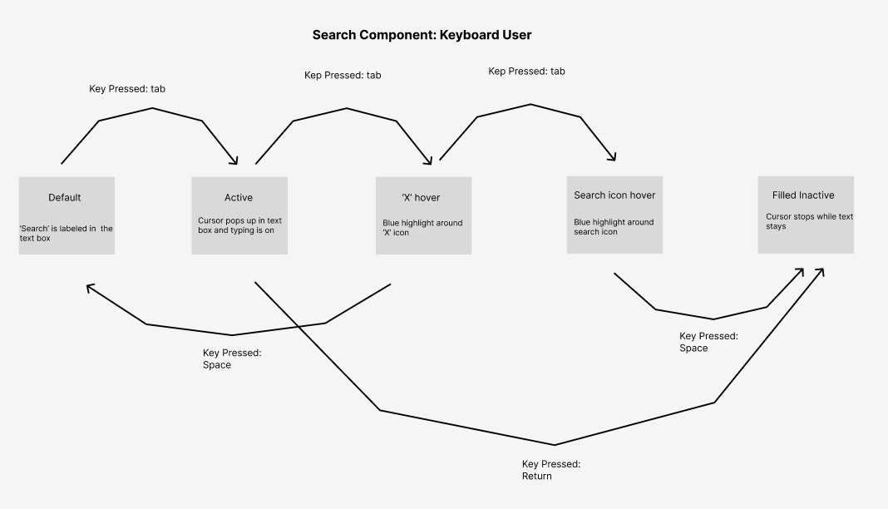
Let's revise each of these state models such that we make a change that affects how we perceive its efficiency and accessibility.
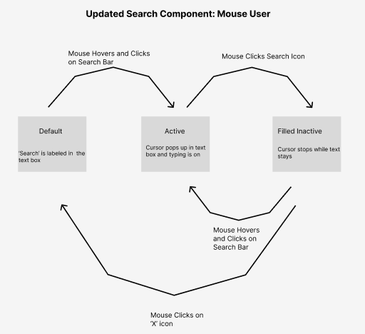
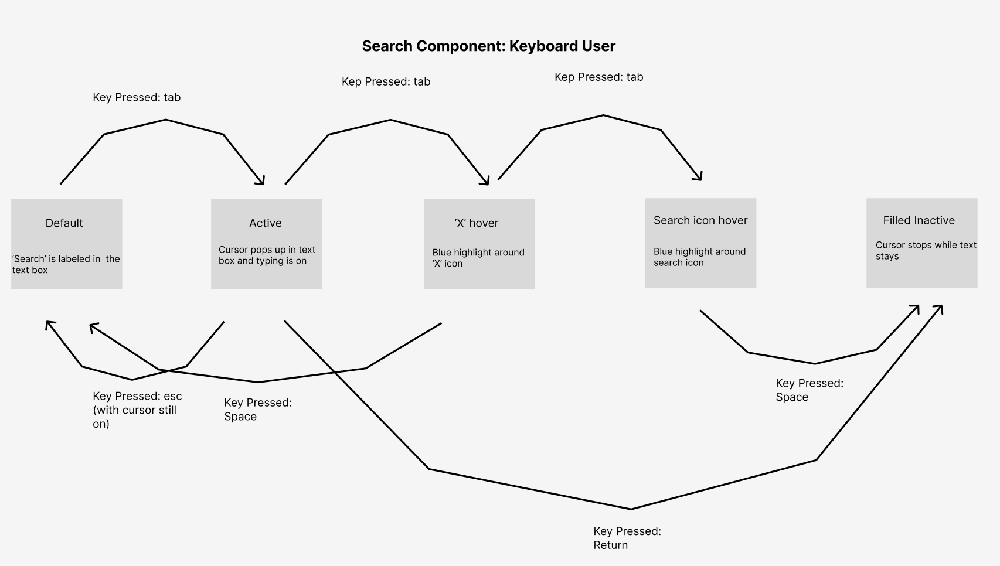
What Did We Change?
- We added functionality to the 'esc' button on keyboard, such that when keyboard users press it, their typing progress resets while keeping their cursor on the search bar. This makes it more efficient because previously, they would have to 'tab' back to the search bar after clearing their search.
- The tradeoff we made with mouse users is that we took away the ability to click off the search bar to leave it. Now, they have to go to the 'X' icon everytime they want to exit it, making that process less efficient for them.
Finally, Let's Redesign The Component
We'll redesign the intial state such that there is search history avaible to the user. The second state we will redesign is more so a demonstration of the new 'esc' functionality, and making the screen reading more clear (from what it was before, as explained above). Let's see this visually.
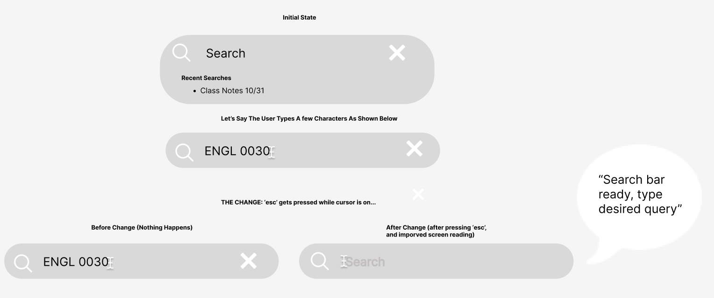
This redesign improves the screen reading and demonstrates the added functionality of the 'esc' key. The screenreader, when the cursor begins on an empty bar, will state, "Search bar ready, type desired query". This improves the screen reading issue we mentioned above.
And when the 'esc' button is pressed, we reset the search bar without leaving the search bar. This is different from clicking the 'X' icon because the 'X' icon would send us out of the text box all tpgether. This redesign makes the component more learnable, efficent, and accesible for screen reading and keyboard users.
Reflecting...
The Google Docs search bar performs well in accessibility and usability. For ease, it is at the top of the screen so it's easy to find, and there are clear labels and guiding icons to follow. The focus order and keyboard logic is standard, but the screen reader was less clear as we mentioned above. To fix this, I refined the
screen readers language to make for easier interpretation, shown in the redesigns. I also added 'esc' key functionality for a shortcut to delete the text in the search bar while also keeping the cursor active. This elimnates the need to tab to the 'X' icon, making it more efficient for keyboard users.
Docs and the Photos App support tab navigation, which helps users with motor impairments, while live search reviews can help those with cognitive disabilities. On the other hand, the Instagram app requires tapping to activate typing, which can be difficult for motor-impaired users, and screen reader support is limited.
Overall, mouse users are the ost prioritzes, as many applications are optimized for touch and mouse interactions. The other groups face more limitations, highlighing the need for more inclusive design.